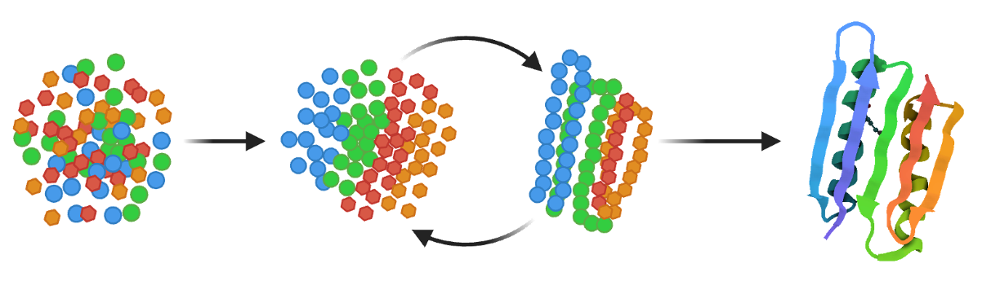
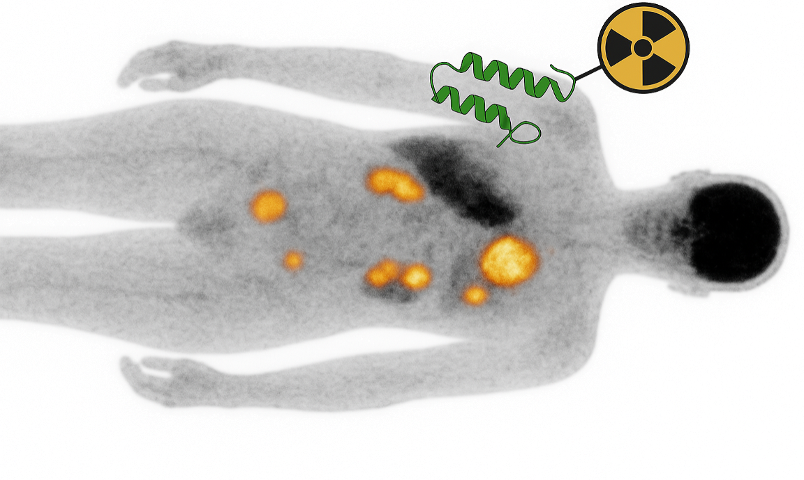

Fusiomica harnesses advanced protein design to create de novo binders that diagnose and treat disease with unprecedented precision and speed.
Work with usFusiomica is a protein engineering company specialising in the design of de novo mini-protein binders. Leveraging state-of-the-art genAI algorithms, we generate ultra-stable, high-affinity proteins that bind targets inaccessible to antibodies. Unlike natural antibodies (~150 kDa), our binders are 8–15 kDa, enabling rapid tissue penetration, fast clearance, and precise targeting. They are produced in E. coli at very high yields and remain folded up to 95 °C. A single engineered cysteine permits site-specific conjugation of radionuclides, fluorophores, or drugs. The result is a versatile platform that delivers cost-effective imaging probes, biopharmaceuticals, diagnostic, and research reagents.
We partner with pharmaceutical, biotech, and diagnostic organisations to design bespoke binders and deliver experimentally validated constructs. Engagement models include fee-for-service, shared-risk with success fees, and full IP transfer.
Computational generation of hundreds to thousands of candidate binders using structure-guided design and deep generative models. Rigorous in silico screening identifies hits with desired epitope specificity.
Expression and purification in E. coli, followed by binding assays (HPLC, SPR, ELISA) to confirm on-target affinity. Lead molecules are affinity-matured to sub-nanomolar range and assessed for stability, solubility, and manufacturability.
Site-specific conjugation of radionuclides, fluorophores, or payloads via engineered cysteines or unnatural amino acids. Fusion to Fc domains extends half-life when required. Final constructs are ready for pre-clinical imaging, therapeutic, or diagnostic applications.
To showcase the power of our platform, we pursued a self-funded proof-of-concept programme against a challenging cancer marker (“Target 1”). With a limited bootstrapped budget, our scientists generated multiple binder designs in silico and synthesised the top candidates. Experimental testing confirmed binding for more than 40% of the designs. The selected binder exhibits nanomolar affinity and no unfolding up to 95 °C. Production in E. coli yields >100 mg·L⁻¹ of pure protein.
A single cysteine residue, absent from the natural scaffold, allows site-specific attachment of radionuclides, fluorophores, or cytotoxins. This binder forms the basis of a European patent application (EP25461534). The entire project was executed 10× cheaper and 80% faster than a comparable antibody discovery campaign.
Representative data show purity, binding kinetics, and thermostability (target labels redacted).
Purity assessment. Coomassie-stained SDS-PAGE confirms single bands at expected molecular weights.
Monodispersity. Analytical SEC shows a sharp main peak with minimal aggregation.
Equilibrium binding. MST traces and binding isotherm demonstrate nanomolar affinity with saturable behaviour.
GPCR epitopes are buried in flexible extracellular loops and adopt multiple conformations. Our mini-proteins penetrate these loops and can stabilise specific receptor states or block ligand binding.
Binders are ideally suited where stability, specificity, and ease of production are essential.
De novo binders offer compact, human-sequence-free recognition domains for cell therapies.
Combining multiple de novo binders enables advanced bispecific, multispecific, and bifunctional molecules.
Site-specific cysteine engineering enables precise conjugation of cytotoxic payloads for targeted therapies.
De novo binders can be fused to additional domains to add new biological functions or pharmacological properties.
We are advancing a diversified portfolio of binder programs, each representing a high-value opportunity in oncology or immunology. Our goal is to develop these de novo binders into next-generation PET probes and theranostics, enabling targeted imaging and therapy.
Our de novo binders are being developed into targeted PET probes that act like a molecular biopsy. These small, stable proteins enable same-day, high-contrast imaging and can be converted into theranostic agents by swapping the imaging isotope for a therapeutic radionuclide. This approach allows:
Note: “Target selection” means prioritisation of new antigens; “Hit generation” is initial binder discovery; “Lead optimisation” involves affinity, stability, and manufacturability engineering.
Ready to explore how our binder technology can benefit your project? Send us a message and we’ll get back to you shortly.
Email:
Correspondence address: Szlak 77/222, 31-153 Kraków
Deliveries address: MCB UJ, Gronostajowa 7a, 30-387 Kraków | Poland